Introduction
PitWall Control est le gestionnaire de championnats de slot : la partie administrative et saisonnière. Il ne chronomètre pas les courses (c'est le rôle de PitWall, le chronométreur) ; Control gère tout ce qui entoure la compétition — pilotes, équipes, catalogues techniques, vérifications, crédits, trésorerie et classement — et communique avec PitWall pour envoyer les séries et récupérer les résultats.
L'interface de l'application est en espagnol ; ce manuel cite ses libellés en espagnol lorsque cela aide à les retrouver à l'écran.
- Fonctionne sur ordinateur (macOS, Windows et Linux) et sur Android (tablette ou téléphone). Les données restent sur l'appareil ; pour les partager entre plusieurs appareils, utilisez la copie sur Google Drive. Pour vérifier à plusieurs en même temps le jour de course, voir Vérifier à plusieurs.
- La navigation principale, à gauche, dépend du championnat actif (choisi en haut, dans le cadre rouge) : Accueil, Pilotes, Équipes, Épreuves, « Resum. Verifi. » (le récapitulatif des vérifications), Classement, Trésorerie et Crédits. Trésorerie et Crédits n'apparaissent que si le championnat les utilise.
- En bas se trouvent les accès généraux : Vérification libre, Championnats, Catalogues, Google Sheets, Modèles CSV, Nouveautés (l'historique des versions) et le passage mode clair / sombre. Tout en bas, la version installée.
- Si vous n'avez encore aucun championnat, l'accueil propose Créer un championnat ou Vérifier seulement des voitures (la vérification libre).
Vous configurez le championnat et ses catalogues une fois, puis vous ne faites qu'inscrire, vérifier, encaisser et publier : PitWall Control applique les règles pour vous.
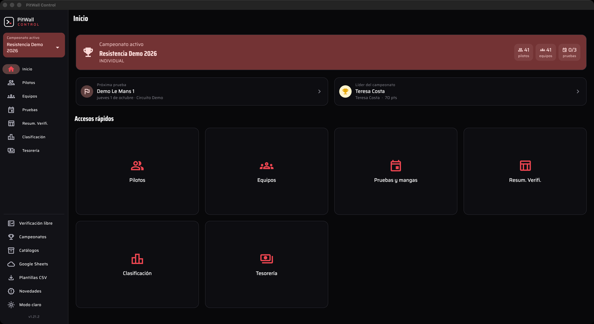
Créer le championnat
Tout dépend d'un championnat. Depuis Championnats, vous en créez un nouveau et définissez son fonctionnement. Le championnat choisi comme actif est celui affiché dans toute l'application. Un nouveau championnat démarre vide : aucune coupe cochée et aucune cotisation, pour que vous mettiez les vôtres.
Données de base
- Nom et année.
- Format : Doublettes (2 pilotes par équipe), Individuel (1 pilote) ou 24h (équipes d'endurance jusqu'à 6 pilotes).
- Coupes / catégories : cochez les classes qui courent (p. ex. LMP, GT3, GRUPO C) ou ajoutez-en une. Il faut en cocher au moins une pour enregistrer. Elles servent au classement et à filtrer les catalogues lors de la vérification.
- Largeur d'essieu : maximum avant et arrière (mm) par coupe. Laissez vide si cette coupe n'est pas contrôlée.
Règles
- Crédits : active le système de handicap, avec son plafond de régularisation. À la création, vous pouvez importer les crédits d'un autre championnat. Désactivé, tous ses champs et la section Crédits sont masqués.
- Trésorerie : active les cotisations par épreuve. Indiquez le Pagat (la cotisation totale, obligatoire) et sa répartition : ce qui va au comité d'organisation (« Coordinadora ») et ce qui va au club. Comité + Club doivent faire le Pagat, sinon l'enregistrement est refusé.
- Points : nombre de résultats écartés (pires épreuves qui ne comptent pas). Le barème se modifie dans Classement.
Moteur (vérification)
Ici, vous décidez d'où viennent les moteurs du championnat, pour que la vérification ne le demande pas à chaque fois :
- Tirage (« Sorteo ») : l'organisation tire les moteurs au sort. La vérification ne note que le numéro du moteur.
- Propre (« Propio ») : chaque équipe apporte son moteur. La vérification le choisit dans le catalogue et contrôle RPM et uMs.
- Mixte (« Mixto ») : chaque vérification indique si le moteur est de l'organisation ou propre.
Avec Tirage ou Mixte apparaît la plage de numéros à tirer (moteur de / à), nécessaire pour le tirage. À la création du championnat, il faut choisir l'une des trois options.
Fabricant, marque et état
- Limiter le fabricant : pour les championnats monomarque. Vous choisissez les marques autorisées et, lors de la vérification, les listes de marque de pignon, couronne, jantes et tresse ne proposent que celles-ci ; toute autre déjà enregistrée apparaît comme infraction.
- Marque dans les PDF : titre d'en-tête et devise de pied de page propres au championnat. Vides, la marque par défaut est utilisée.
- Championnat visible (seuls les visibles apparaissent dans le sélecteur) et Championnat terminé (saison close : le classement trie par points nets et le bonus de fin de saison est activé).
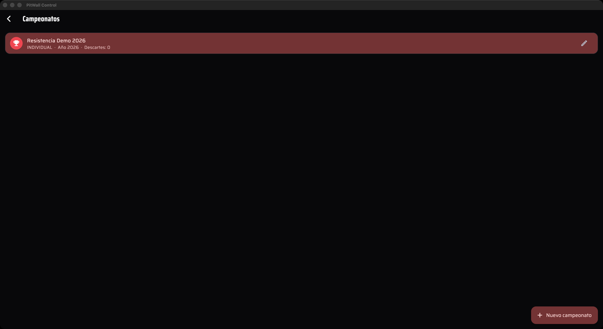
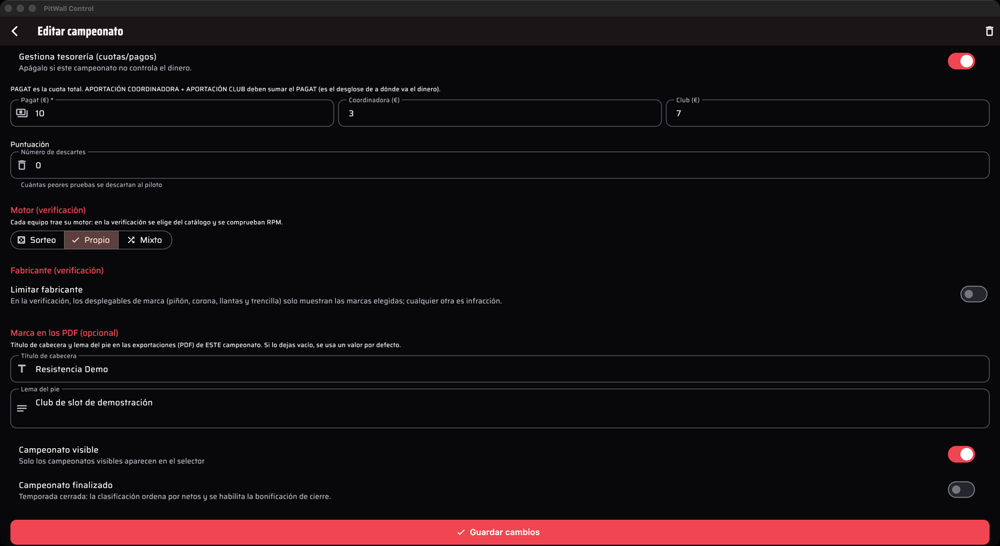
Catalogues (votre bibliothèque)
Les catalogues sont les listes réutilisables de matériel homologué. On les tient à jour une fois et ils alimentent les listes de la vérification. Chaque onglet a une recherche et, si besoin, un filtre par coupe.
- Voitures : modèle, marque, poids minimum, crédits, coupe(s) et une photo de référence (appareil photo ou galerie) à comparer avec la voiture remise par l'équipe.
- Marques : code court et nom (celles proposées pour pignon, couronne, jantes et tresse).
- Jantes : dimension, type par essieu (DELANTERA / TRASERA / AMBAS — avant / arrière / les deux) et coupe(s).
- Engrenages : pignons et couronnes avec leurs dents, diamètre et coupe(s). Les dents proposées à la vérification viennent d'ici.
- Moteurs : nom, RPM et gauss de référence, et coupe(s).
- Supports moteur et Pneus : avec coupe(s).
- Châssis : sans coupe ; la vérification les propose toujours tous.
- Coupes (la liste maîtresse) et Clubs : listes d'appui.
La coupe dans le catalogue
La fenêtre nouvelle fiche / modifier contient le sélecteur de coupes, et la liste affiche sous chaque fiche ses Copas: …. Vous pouvez remplir les catalogues à la main, les importer en CSV (voir Modèles CSV), en Excel (ci-dessous) ou les synchroniser avec Google Sheets (voir Google Sheets et Drive).
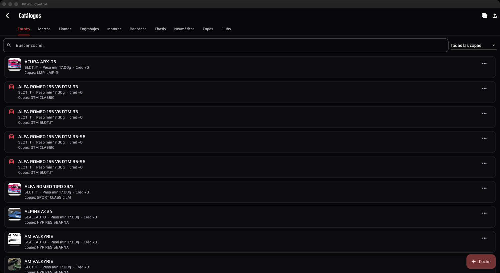
Tout le catalogue en Excel
En haut à droite de Catalogues, le bouton à icône de tableau ouvre deux actions qui portent sur tous les catalogues à la fois :
- Exporter tout en Excel : un .xlsx avec un onglet par catalogue — Coches, Marcas, Llantas, Engranajes, Motores, Bancadas, Chasis, Neumaticos, Copas, Clubs.
- Importer l'Excel modifié : vous rendez la feuille et l'application applique les changements.
La première colonne de chaque onglet est l'ID : ligne avec ID → la fiche est mise à jour ; ligne sans ID → une nouvelle est créée ; ligne supprimée de la feuille → reste dans l'application (l'import ne supprime jamais). La colonne Copas est du texte séparé par des points-virgules (p. ex. GT;GT2). Avant d'appliquer, l'application demande confirmation puis résume combien de fiches ont été créées et mises à jour.
Pilotes
Le pilote est une fiche unique (nom, téléphone, email) qui peut courir dans plusieurs championnats. Dans chaque championnat, il a son propre profil :
- Catégorie (PLATINO · ORO · PLATA · BRONCE), l'échelle utilisée par le bonus de fin de saison et la promotion entre saisons.
- Crédits initiaux et actuels (si le championnat utilise les crédits).
- Comité d'organisation : si tous les pilotes d'une équipe en font partie, l'équipe ne paie pas la cotisation.
Depuis Pilotes, vous ajoutez, modifiez et recherchez. Le bouton Importer en amène beaucoup à la fois depuis CSV, Excel ou Google Sheets, ainsi que le score précédent : les points de la saison passée des pilotes déjà inscrits, qui servent à ordonner les manches de la première épreuve d'un nouveau championnat. Dès qu'il y a des résultats propres, le vrai classement prend le relais.
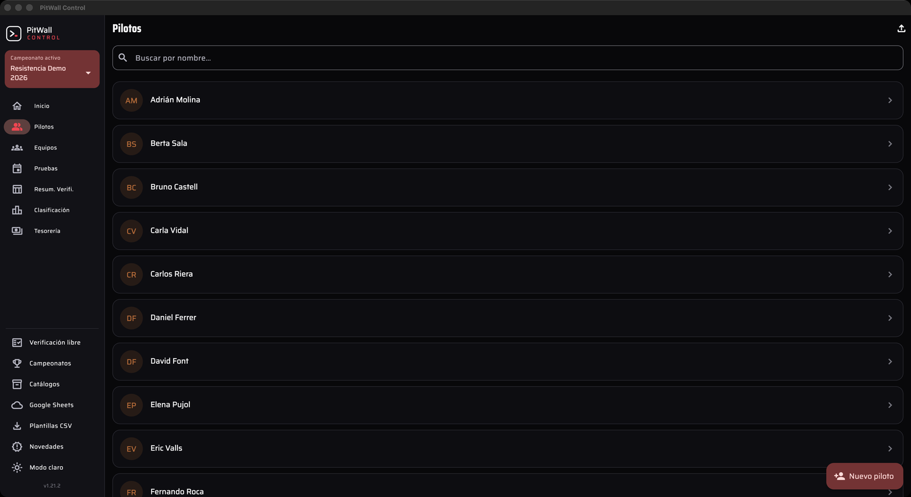
Équipes et inscriptions
Une équipe regroupe les pilotes qui partagent une voiture et court dans une coupe précise. Le nombre de pilotes dépend du format :
- Individuel : 1 pilote. L'écran s'appelle Inscriptions (« Inscripciones ») et ne demande pas de nom d'équipe : celui du pilote est utilisé.
- Doublettes : 2 pilotes.
- 24h : de 1 à 6 pilotes ; vous ajoutez et retirez des places dans l'éditeur.
Vous pouvez les créer à la main ou les importer en CSV (le modèle endurance accepte Piloto 1…5).
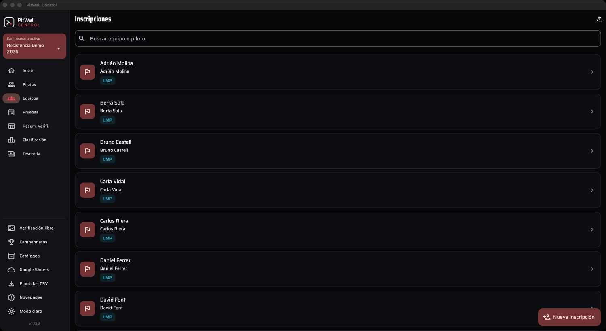
Épreuves et manches
Une épreuve est chaque rendez-vous du calendrier (nom, lieu, date, ordre et état : programmée, en cours ou terminée). En l'ouvrant, vous voyez ses manches et, à gauche, les options de l'épreuve : inscrits, résultats, vérifications, récapitulatif des vérifications, modifier les manches, tirage des moteurs, trésorerie de l'épreuve, PDF des manches et des vérifications, et l'échange avec PitWall.
- Créez l'épreuve et placez-la dans le calendrier.
- Inscrivez les équipes (ou pilotes) qui courent.
- Générez les manches avec l'attribution des couloirs.
- Le jour de course, vérifiez, encaissez et ajustez les manches si besoin.
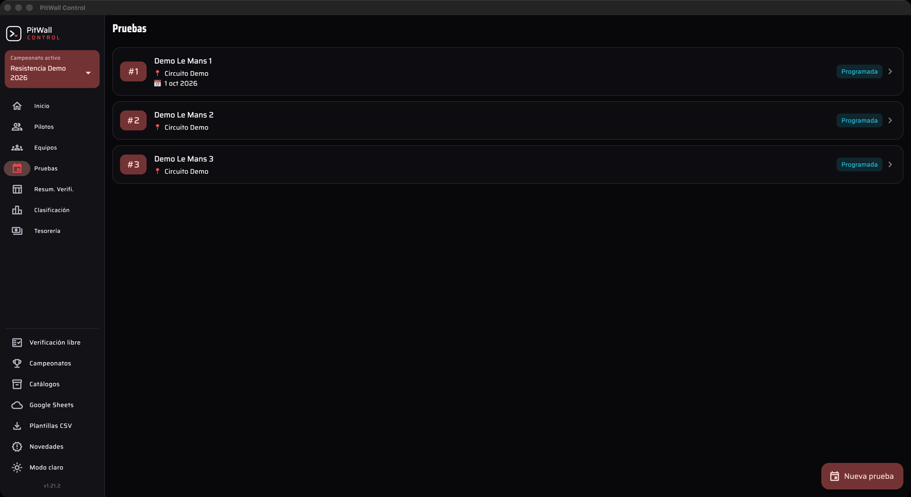
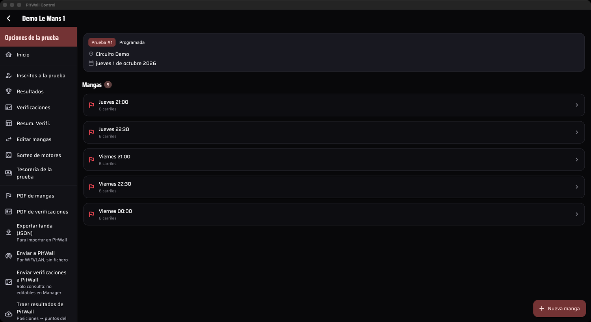
Inscrits
Inscrits à l'épreuve montre qui court, avec sa coupe et son jour préféré. Vous pouvez ajouter à la main (icône personne avec « + », en haut), importer depuis CSV/Excel ou Google Sheets et désinscrire qui ne court pas (retiré des inscrits et de sa manche). La coupe est enregistrée comme instantané de cette épreuve : si celle de l'équipe change ensuite, l'épreuve garde celle avec laquelle elle a couru.
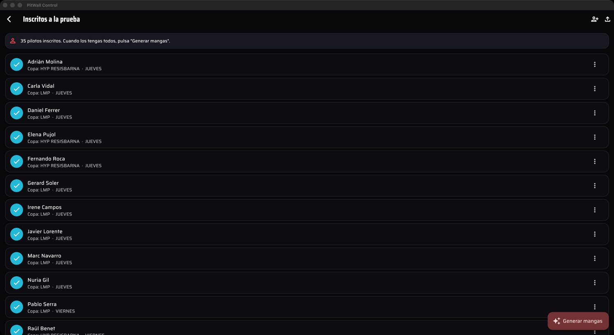
Générer les manches
L'assistant répartit les inscrits en manches par jour :
- Couloirs de la piste et minutes par couloir (calcule la durée réelle de chaque manche et espace les horaires suggérés).
- Nombre de manches : autant que de couloirs pleins possibles, le reste étant réparti ; la dernière manche du jour n'est jamais à moitié vide.
- Noms et horaires de chaque manche.
- Attribuer les couloirs automatiquement et attribuer les commissaires (championnats individuels) : par points décroissants, dans les couloirs 1…N et, s'il en reste, repos D1, D2… ; les commissaires sont répartis entre les manches du même jour.
- Aperçu avant création et option de remplacer les manches existantes.
La manche, le jour de course
Le détail de la manche montre la grille : chaque couloir avec son pilote, les couloirs libres (« Libre ») et, à la fin, ceux qui n'ont pas encore de couloir. Touchez un pilote (ou « Changer de couloir » dans son menu) et une grille de tous les couloirs apparaît : touchez-en un libre pour l'y déplacer ou un occupé pour les échanger. Vous pouvez aussi renuméroter les couloirs par points, choisir les commissaires, retirer quelqu'un de la manche et voir un avertissement en cas de couloirs en double. Dans Modifier les manches, vous déplacez des pilotes d'une manche à l'autre (ils arrivent sans couloir, à attribuer sur place).
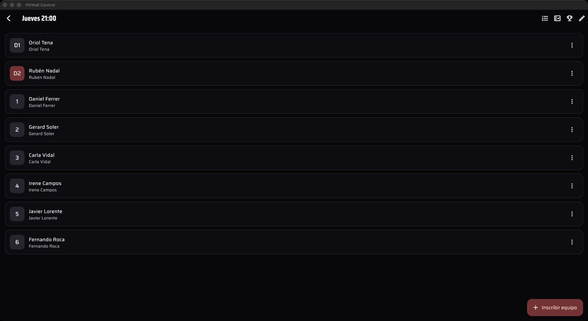
Vérifications techniques
La vérification est le cœur du jour de course : pour chaque équipe, vous contrôlez que son matériel respecte le règlement avant de le valider. On y entre depuis l'épreuve (Vérifications), on choisit la manche et l'équipe. Chaque manche indique combien sont validées.
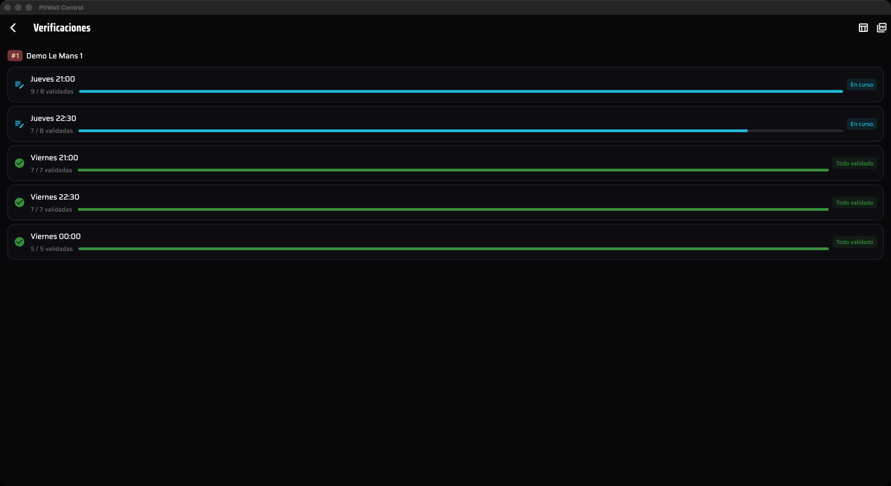
La fiche de vérification
En haut, le nom de l'équipe et sa coupe (touchez-la pour la changer pour cette épreuve seulement). Dessous, le résumé de ce qui n'est pas conforme et une barre avec les blocs terminés et ceux qui manquent. Si le championnat gère une trésorerie, le bloc Trésorerie permet d'encaisser sur place, avec le même formulaire que la trésorerie de l'épreuve.
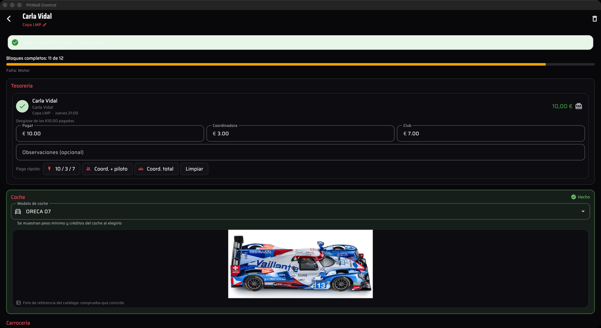
Chaque bloc est dans un cadre avec son état : ambre « Pendiente » s'il manque une donnée, vert « Hecho » quand il est complet et rouge « Revisar » si quelque chose est hors règlement. Les blocs sont :
- Voiture : seulement les modèles de sa coupe, avec la photo de référence du catalogue dessous pour comparer.
- Carrosserie : poids (avec le minimum de la voiture) et esthétique — « Bien » ou « Faltan piezas » (pièces manquantes), avec un texte pour noter lesquelles.
- Moteur : selon le type de moteur du championnat. De l'organisation : le numéro (avec un bouton Tirer). Propre : le moteur du catalogue, avec RPM et uMs contrôlés en direct contre sa référence (✓/✗ ; ce sont des maximums). En plus, hauteur du moteur par rapport à la piste : conforme / non conforme.
- Largeur d'essieu avant et arrière, contre le maximum de sa coupe (compte seulement si la coupe en a un).
- Jante avant et arrière : marque et dimension, filtrées par coupe et par essieu.
- Pignon et couronne : marque, dents (celles du catalogue des engrenages de sa coupe), diamètre et matière — pignon PL / ERG / LAT / ACR / ALU ; couronne PL / MET.
- Support moteur, châssis, poids de la voiture complète et autres (pneu, tresse, suspension).
- Observations et photos (jusqu'à 4), facultatives.
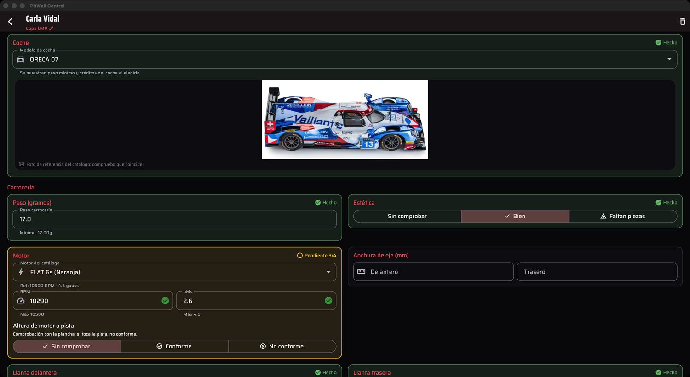
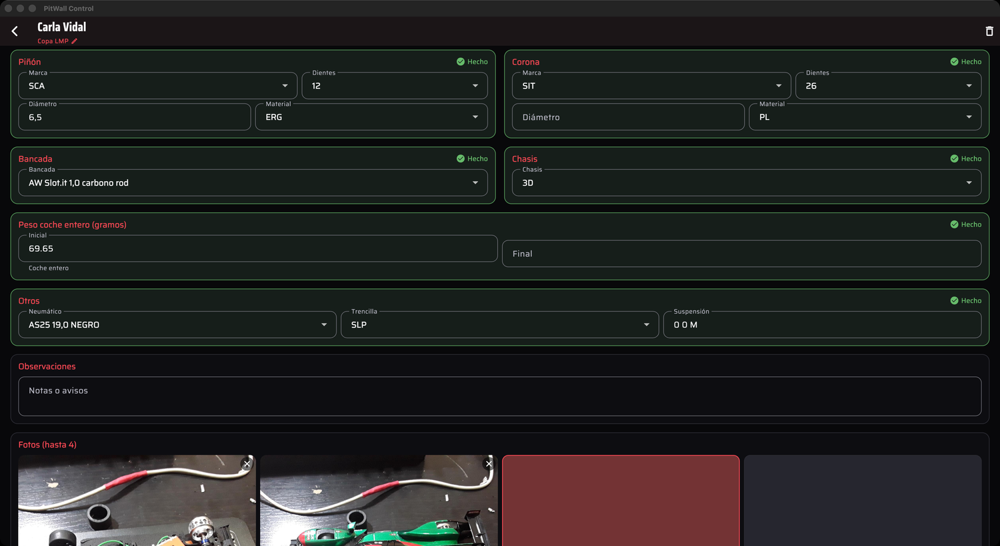
Infractions et validation
L'application signale en rouge ce qui est hors règlement : poids sous le minimum, essieu au-dessus du maximum, RPM ou uMs au-dessus de la référence, moteur qui touche la piste, marque non autorisée (avec limiter le fabricant), pièces manquantes… La vérification s'enregistre automatiquement en brouillon à chaque modification, vous pouvez donc en avoir plusieurs ouvertes. Quand tout est conforme, vous la validez.
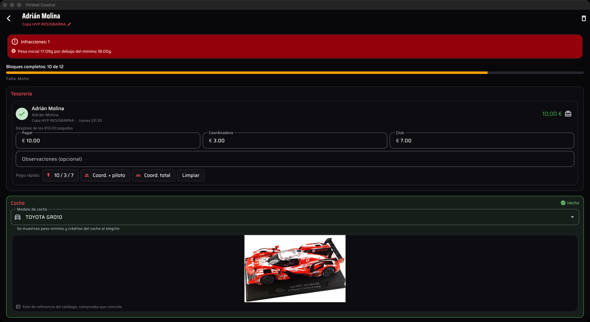
Récapitulatif en grille
« Resum. Verifi. » (dans la barre latérale, dans l'épreuve ou avec le bouton grille de Vérifications) montre toutes les vérifications d'une épreuve dans un tableau façon tableur, en lecture seule : une ligne par inscrit avec état, coupe, voiture, poids, moteur, essieux, transmission, jantes, support, châssis, pneu, carrosserie et observations. Ce qui est hors règlement apparaît en rouge (au survol, on voit la raison). Il y a une recherche et des filtres (avec infraction, non vérifiés, en brouillon) et il s'exporte en PDF et en Excel.
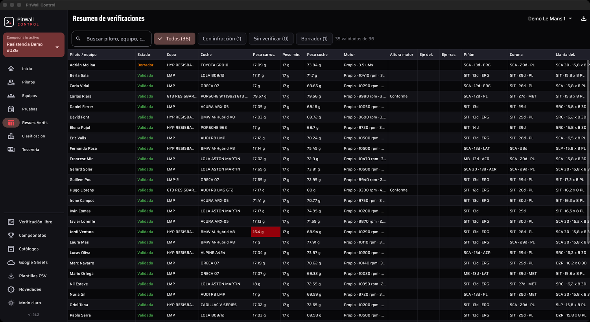
Vérifier à plusieurs
Quand il y a plusieurs vérificateurs, chacun peut travailler sur son propre appareil (Mac, Windows ou Android) sur la même épreuve en même temps. Chaque Control enregistre sur son appareil et ils se passent les modifications par le wifi. Pas besoin d'internet : un routeur sans connexion ou le point d'accès d'un téléphone suffit.
Avant l'événement
- Tout le monde part de la même copie des données : championnat, épreuve, manches et équipes. Le plus simple est de restaurer sur chaque appareil la même copie Google Drive.
- Tout le monde sur la même version de PitWall Control (sinon la synchronisation prévient et ne se fait pas).
- Heure automatique activée sur tous les appareils.
Se connecter
Dans l'épreuve, ouvrez « Verificar entre varios » (depuis le menu de l'épreuve ou avec l'icône de synchronisation de Vérifications techniques). Sur chaque appareil :
- Donnez-lui un nom différent : « Mesa 1 », « Tablet boxes »…
- Saisissez la clé de l'événement (« Clave del evento »), la même partout.
- Activez « Conectar con otros Controls » (se connecter aux autres Control).
Ils se trouvent tout seuls sur le réseau et apparaissent dans « Controls en la red », avec l'heure de la dernière synchronisation et ce qui est arrivé. Si l'un n'apparaît pas (certains routeurs ne le permettent pas), ajoutez-le avec le bouton de lien en saisissant l'adresse affichée sous « Visible como » sur son écran. Avec « Sincronizar automáticamente » les modifications passent toutes les 20 secondes ; vous pouvez aussi appuyer sur « Sincronizar ahora » (synchroniser maintenant). L'icône de Vérifications techniques indique combien de Control sont connectés.
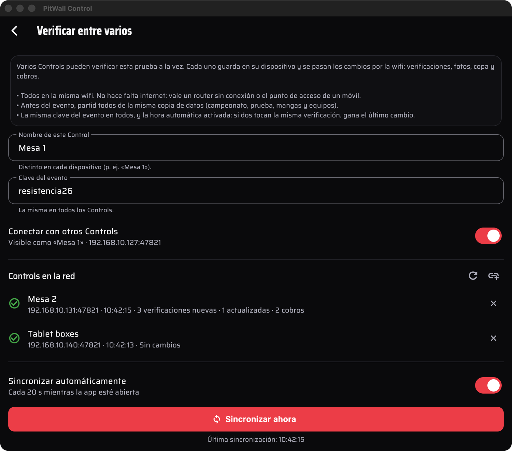
Ce qui est partagé
- Les vérifications, avec leurs photos, et les suppressions.
- La coupe de chaque équipe dans l'épreuve.
- Les encaissements de la trésorerie, y compris wildcard et « Coord. total ».
Les modifications passent d'un Control à l'autre même si ces deux-là ne se sont pas synchronisés directement. Les crédits ne sont jamais déduits deux fois : chaque Control calcule les siens en recevant une vérification validée.
L'application doit être ouverte sur chaque appareil (sur Android, si elle passe en arrière-plan, elle cesse de partager). La vérification libre n'est pas synchronisée. La première fois, Windows demande l'autorisation du pare-feu et macOS celle du réseau local : acceptez-les.
Classement
Le classement se calcule à partir des résultats des épreuves et des règles du championnat :
- Barème de points par position, propre à chaque championnat. Il se modifie depuis le bouton Barème : combien de positions marquent et combien de points chacune rapporte (ou restaurer les valeurs par défaut).
- Résultats écartés : pires résultats qui ne comptent pas.
- Général et un onglet par coupe. La colonne Coupe montre la coupe avec laquelle le pilote a couru.
Vous pouvez aussi le remplir à la main ou l'importer, et l'exporter en PDF.
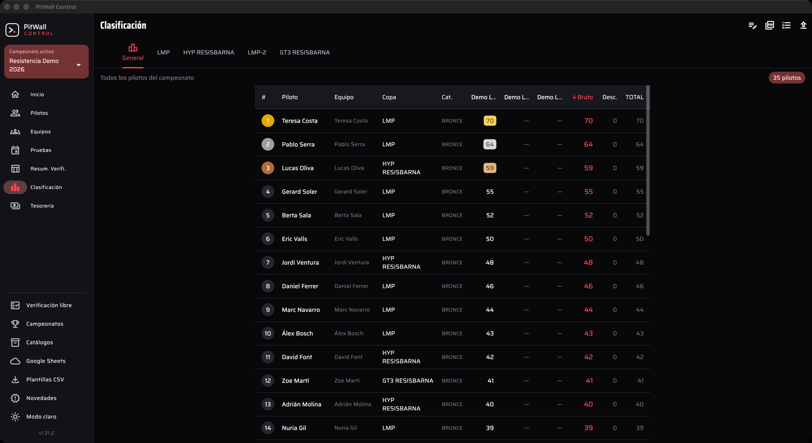
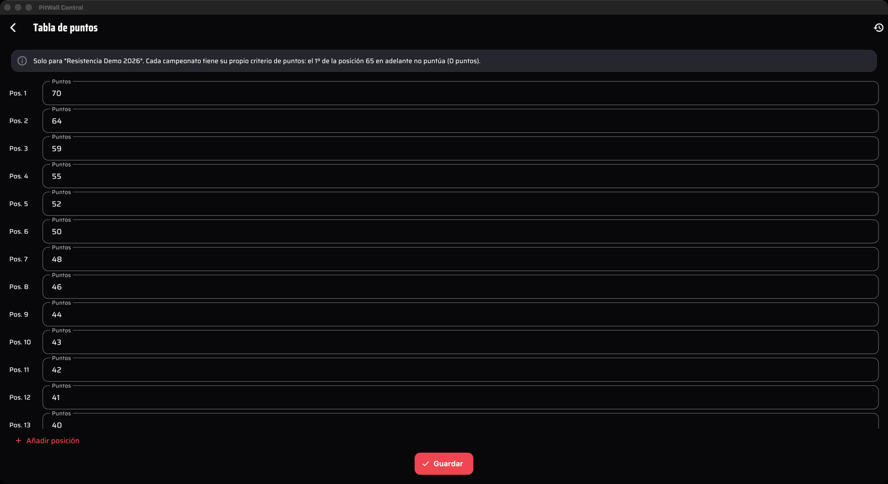
Trésorerie
Si le championnat utilise la trésorerie, chaque équipe paie une cotisation par épreuve (le Pagat), répartie entre le comité d'organisation et le club. L'écran Trésorerie montre le solde du championnat, l'encaissé à chaque épreuve et les mouvements supplémentaires (sponsoring, frais de matériel… avec le bouton « Movimiento »).
- Répartition (« Reparto ») : changez le Pagat et ce qui va à chaque partie (avec le % de chacune). Vous pouvez l'appliquer aussi aux paiements déjà encaissés : ce qu'a payé chaque équipe est réparti à nouveau, sans changer l'encaissé.
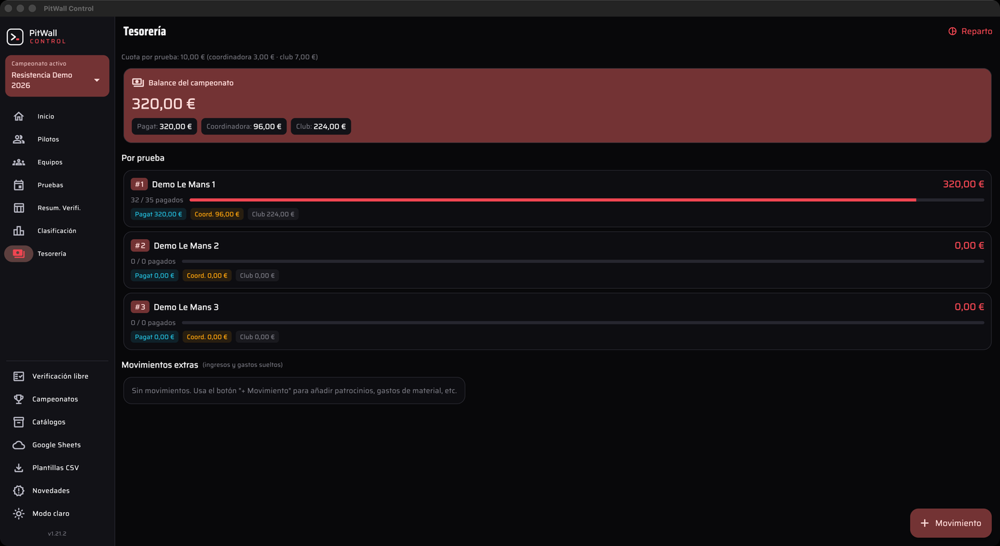
Encaisser lors d'une épreuve
Dans Trésorerie de l'épreuve (ou directement dans la vérification de chaque équipe), vous encaissez avec :
- Pagat / Coordinadora / Club. Si vous ne saisissez que le Pagat, la répartition se remplit selon la proportion du championnat ; si elle ne tombe pas juste, un avertissement apparaît avec un bouton « Repartir » (répartir).
- Paiement rapide : la cotisation complète d'un geste ; « Coord. + piloto » (un pilote est du comité : paie la moitié) ; « Coord. total » (tous le sont : ne paie pas) ; « Limpiar » (effacer).
- Wildcard (icône cadeau) : invité, ne paie pas. Ceux qui ne paient pas ne comptent pas comme en attente : le compteur affiche « X / Y payés · N ne paient pas ».
- Une recherche fixe en haut pour trouver vite qui va payer.
L'enregistrement se fait en quittant chaque champ. La trésorerie de l'épreuve et la vérification affichent toujours la même chose.
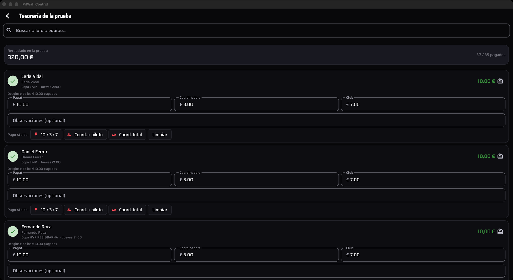
Crédits et clôture
Le système de crédits est le handicap du championnat : chaque pilote démarre avec des crédits qui montent ou descendent selon le résultat. Depuis Crédits, vous voyez le solde et les mouvements (chacun avec sa description), pouvez ajuster à la main, exporter en PDF ou CSV et gérer la clôture.
Bonus de fin de saison
En fin de saison, un bonus est appliqué selon la catégorie du pilote et le nombre de courses disputées (tranches configurables). Le mouvement est décrit (p. ex. « bonus pour 6 courses »).
Révision des catégories
Avant de terminer, la Révision des catégories permet de décider pilote par pilote s'il monte, descend ou reste sur l'échelle BRONCE→PLATA→ORO→PLATINO. Cette catégorie sert au bonus et de catégorie initiale lors de l'import dans le championnat suivant.
Tirage moteur
Si le moteur du championnat est en Tirage ou Mixte et que sa plage de numéros est configurée, Control tire pour chaque équipe un numéro dans la plage, en excluant ceux déjà attribués dans l'épreuve. Depuis Tirage des moteurs (dans l'épreuve), vous tirez équipe par équipe ou « Sortear restantes » (tirer le reste) d'un coup, et l'onglet Numéros montre qui a lequel. On peut aussi tirer depuis la vérification elle-même.
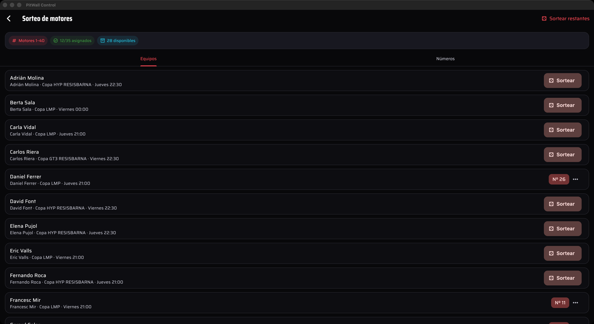
Vérification libre
Pour vérifier des voitures sans championnat ni épreuve : une course ponctuelle, un contrôle au club ou tout autre rendez-vous. Elle s'ouvre depuis Vérification libre (« Verificación libre ») dans la barre latérale (ou depuis l'accueil, même sans championnat).
- Chaque session a un nom, un lieu et une date, et son propre règlement : coupes, largeur d'essieu par coupe, limiter le fabricant et type de moteur (Tirage / Propre / Mixte, avec sa plage). Une nouvelle session démarre vide, comme un championnat.
- Participants : ajoutez-les un par un (pilote avec saisie semi-automatique, second pilote et équipe facultatifs, et coupe) ou importez-les depuis un fichier CSV / Excel ou Google Sheets. L'importateur reconnaît seul les colonnes, propose une coupe par défaut pour les lignes sans coupe et un aperçu pour décocher des lignes. Appui long sur un participant pour le retirer.
- La vérification est la même que d'habitude : enregistrement automatique, photos, tirage, validation par coupe.
- Exporter : en PDF ou en Excel avec photos.
Les sessions n'utilisent ni crédits ni trésorerie, ne sont pas envoyées à PitWall Manager et n'apparaissent pas parmi les championnats.
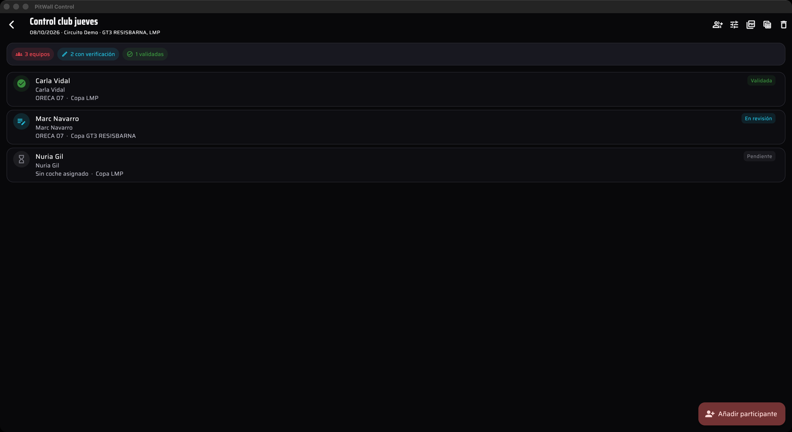
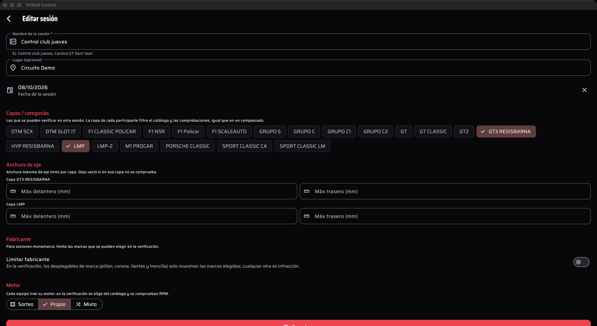
Excel avec photos
Le .xlsx a une ligne par participant avec les colonnes du récapitulatif (hors règlement en rouge et une colonne avec les motifs) et, en fin de ligne, la photo de la voiture au catalogue (« Foto catálogo ») suivie de toutes les photos de la vérification, en miniatures dans les cellules. Il s'affiche correctement dans Excel, LibreOffice et sur mobile (iPhone, iPad, Android).
Google Sheets et Drive
Control peut travailler avec vos feuilles Google et garder des copies sur Google Drive. D'abord, dans Google Sheets, collez les identifiants de votre projet Google Cloud (le bouton « Cómo conseguirlas » vous guide) et connectez votre compte. Control ne demande qu'à lire vos feuilles et à créer ou modifier son propre fichier de copie ; il ne touche à aucun de vos fichiers.
- Catalogues : liez chaque catalogue à son onglet. Mettre à jour depuis Drive ramène les données et Envoyer vers la feuille envoie les vôtres (avec revue avant suppression). Si la feuille a une colonne ID, les lignes sont associées par elle plutôt que par le nom.
- Photos des voitures : une colonne FOTO avec le lien Drive de l'image. La mise à jour télécharge la photo ; l'envoi met sur Drive les photos qui n'existent que dans l'application et écrit leur lien.
- Pilotes, équipes et inscriptions peuvent aussi être importés depuis une feuille.
- Copie partagée sur Drive : envoyez ou téléchargez la base de données (avec les photos des vérifications) pour travailler sur plusieurs appareils, Android compris.
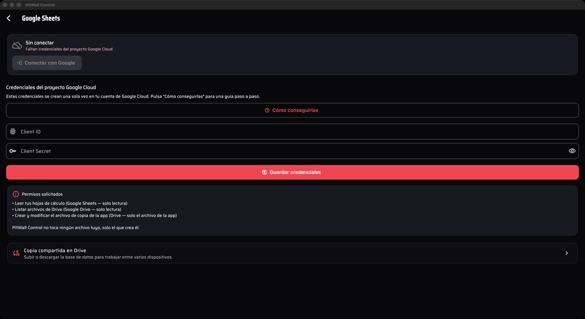
Modèles CSV
Depuis Modèles CSV, vous téléchargez les modèles prêts à remplir et importer : pilotes, équipes (doublettes et endurance, avec Piloto 1…5), inscriptions à une épreuve, participants de vérification libre et chaque catalogue. Remplissez le fichier, importez-le depuis sa section et l'application reconnaît les colonnes.
Pour corriger en masse ce que vous avez déjà dans les catalogues, la voie pratique est Tout le catalogue en Excel.
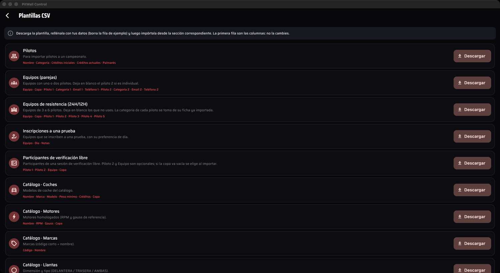
Exporter (PDF et Excel)
- PDF : manches, vérifications d'une épreuve ou d'une session, récapitulatif en grille, classement et crédits. À l'export, vous choisissez la langue du document (espagnol, anglais, italien ou français) et la marque du championnat est appliquée en en-tête et en pied de page. Chaque PDF tient sur une seule page (A4 → A3 si besoin) pour l'imprimer facilement.
- Excel : le catalogue complet, le récapitulatif en grille et la vérification libre avec photos.
- CSV : crédits.
Envoyer à PitWall / récupérer les résultats
PitWall Control communique avec le chronométreur PitWall pour ne rien saisir deux fois : il lui envoie l'épreuve préparée puis récupère les résultats. Les deux applications doivent être sur le même réseau LAN/WiFi.
Choisir le PitWall
Les trois échanges utilisent le même sélecteur : pendant quelques secondes s'affiche « Buscando… » (recherche) et les PitWall du réseau apparaissent (par Bonjour/mDNS et en sondant directement le réseau local, ce qui fonctionne même si le routeur bloque les annonces). Vous pouvez appuyer sur « Buscar de nuevo » (rechercher à nouveau) ou saisir IP:port à la main. Cela fonctionne sous macOS, Windows et Android ; sous Linux, la recherche automatique n'est pas disponible et il faut saisir l'adresse.
Envoyer la série (aller)
Chaque manche devient une série avec chaque équipe dans son couloir et les repos (D1…Dk) placés et en rotation. Deux voies :
- Exporter la série (JSON) : un fichier à charger dans PitWall (Courses → Importer une série). À l'export, il demande si la course a une pole.
- Envoyer à PitWall (par le réseau) : choisissez le PitWall et saisissez le PIN d'appairage affiché sur l'écran Importer une série de PitWall.
Récupérer les résultats (retour)
À la fin, appuyez dans l'épreuve sur Récupérer les résultats de PitWall : choisissez le PitWall et la course, vérifiez dans l'aperçu comment les équipes ont été associées par nom, puis appliquez. La position de chaque équipe au classement final de la course est enregistrée ; Control attribue les points avec son barème. Vous pouvez aussi importer les résultats depuis un fichier de chronométrage dans les Résultats de l'épreuve.
Envoyer les vérifications
Envoyer les vérifications à PitWall transmet les données vérifiées (poids, moteur, pignon, couronne, jantes, validé, observations…), sans les photos, pour qu'elles soient visibles dans la course. Même chemin : PitWall, PIN et la course correspondante, que Control mémorise pour les renvois.
Glossaire
- Championnat : le conteneur de la saison (format, coupes, règles, type de moteur, modules).
- Coupe / catégorie : la classe dans laquelle court une équipe. Elle filtre les catalogues et regroupe le classement.
- Format : Individuel (1 pilote), Doublettes (2) ou 24h (jusqu'à 6).
- Catalogue : bibliothèque de matériel (voitures, marques, jantes, engrenages, moteurs, supports, châssis, pneus). Une fiche sans coupe n'apparaît pas en vérification.
- Type de moteur : Tirage (de l'organisation), Propre (de l'équipe) ou Mixte (choisi à chaque vérification).
- Limiter le fabricant : seules les marques choisies sont autorisées pour pignon, couronne, jantes et tresse.
- Épreuve : chaque rendez-vous du calendrier ; elle contient inscrits et manches.
- Manche : un passage de l'épreuve avec sa grille de couloirs ; D1, D2… sont des repos.
- Commissaires (« pisters ») : les pilotes d'une autre manche qui font office de commissaires de piste.
- Vérification : contrôle du matériel d'une équipe avant validation, bloc par bloc.
- « Resum. Verifi. » : toutes les vérifications d'une épreuve dans un tableau, le hors-règlement en rouge.
- Vérification libre : session de vérification sans championnat ni épreuve, avec son propre règlement.
- « Verificar entre varios » (vérifier à plusieurs) : plusieurs Control qui vérifient la même épreuve en même temps, synchronisés par wifi (sans internet).
- Photo de référence : l'image de la voiture au catalogue, à comparer avec celle remise par l'équipe.
- Pagat : la cotisation totale par épreuve ; répartie entre comité d'organisation et club.
- Wildcard / « Coord. total » : équipes qui ne paient pas à cette épreuve (invité / tous du comité).
- Crédits : système de handicap ; ils montent ou descendent selon le résultat.
- Bonus de fin de saison : crédits ajoutés en fin de saison selon la catégorie et le nombre de courses.
- Échelle des catégories : BRONCE · PLATA · ORO · PLATINO.
- Résultat écarté : pire résultat qui ne compte pas au classement.
- Score précédent : points de la saison passée pour ordonner les manches de la première épreuve.
- Série : l'épreuve empaquetée (pitwall.tanda/v1) envoyée à PitWall.
- PIN d'appairage : le code affiché par PitWall et que Control demande pour l'envoi par réseau.
- Marque : titre et devise du championnat sur les PDF.